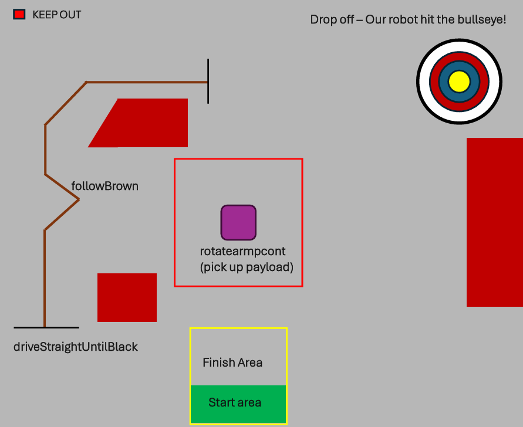
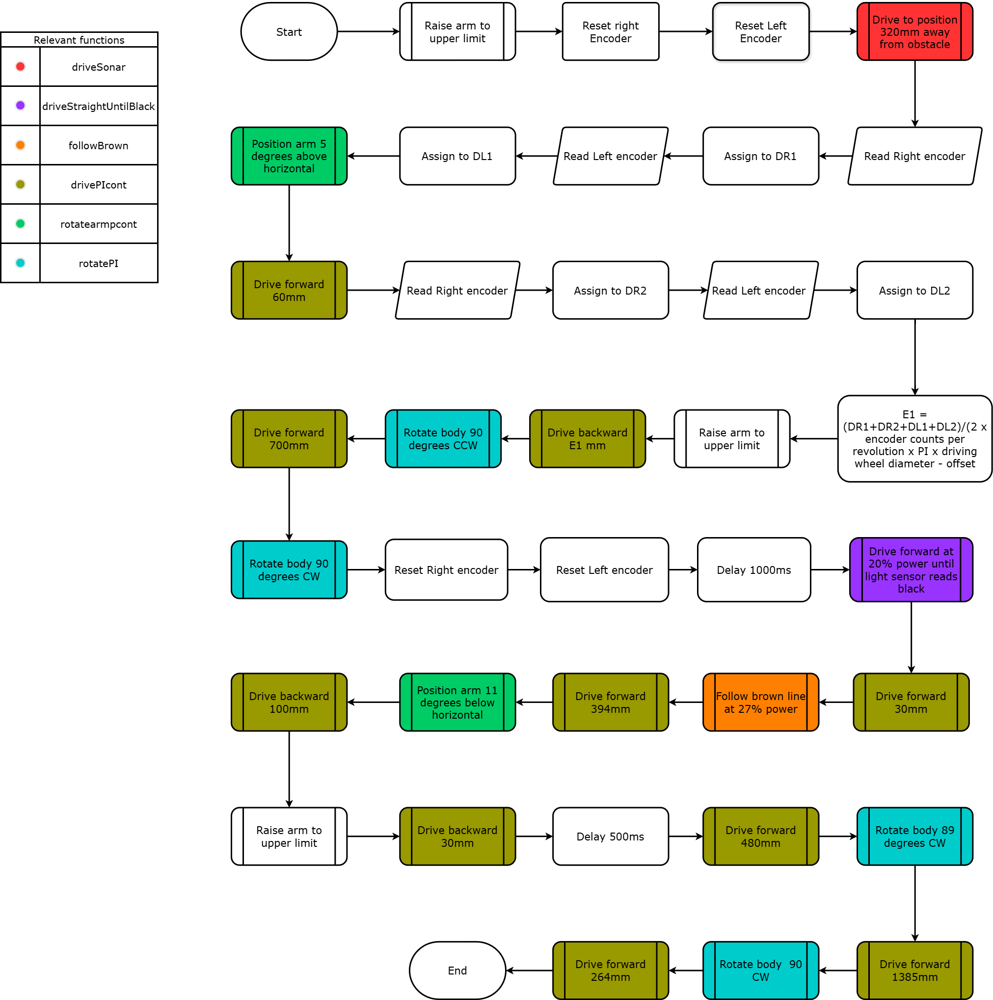

Overview:
Human labour is costly and inefficient in the long run. To counter this, autonomous tech can be adopted. In this project, our team developed a scaled down prototype of an autonomous vehicle using a V5 Vex Robot. The target was to achieve the precise pick-up and drop-off of payloads whilst navigating the complexities of a simulated warehouse environment. The project being programmatic in nature, demanded the extensive use of C functionality guided by sensor readings to either hard code or implement control theories to achieve correct positioning.
Key challenges and achievements:
| Function (descriptions found below) | Challenge | Solution | Impact |
|---|---|---|---|
| driveStraightUntilBlack | Failure to detect black line intermittently | Optimized sensor polling frequency by 2× | Consistent detection in final demo |
| drivePIcont, driveSonar, driveStraightUntilBlack, rotatePI | Integrator windup and drive motor saturation | Capping controller output through anti-windup schemes | Smoother stops with programmed 3mm accuracy and no overshoot |
| drivePIcont, driveSonar, driveStraightUntilBlack, rotatePI | Robot jolt increasing chance of wheel slippage upon initial acceleartion due to large errors | Implemented acceleration smoothing with a gradual ramp up | No jolt or slippage |
| drivePIcont, driveSonar, driveStraightUntilBlack | Mechanical backlash in wheels causing deviation from desired trajectory | Calibrated individual wheel effort to counteract mechanical backlash | No visible deviation from trajectory |
Main program:
I played a major role in developing this program keeping the constraints of the simulated warehouse layout in mind:


Functions I worked on:
I performed an active role in developing, debugging and deploying these identified functions within the main program above. The full implementations may be provided on request to preserve academic integrity.drivePIcont
Allows precise straight-line movement by pairing a PI controller for distance tracking with a P controller for trajectory alignment. It accepts inputs for target displacement and control gains and uses wheel encoder feedback along with the V5 timer to dynamically adjust voltage supplied to each motor. The function features real-world stability measures including anti-windup logic, saturation protection, and acceleration smoothing, ensuring accurate, responsive motion across a specified distance terminating within 3mm of the target distance.
driveStraightUntilBlack
Uses the same straightening P control logic of drivePIcont, to achieve straight-line motion until the detection of a black line leveraging the three available light sensor readings mounted beneath the central chassis. Higher frequency iteration of the control loop through reduced delay intervals facilitates the responsive and reliable stoppage of motion once all sensors simultaneously register the threshold readings.
driveSonar
Ensures the robot uses a front-mounted ultrasonic sensor to guide its approach to an object transitioning to idle once reaching a pre-defined separation distance from a detected object. driveSonar is a specialised implementation of drivePIcont, receiving as inputs, the same controller gains along with the desired offset from an object.
rotatePI
Implements a close-looped PI control scheme to rotate the robot chassis about its pivot point by a specified angle. It accepts control gains and the target rotation as input arguments. Wheel encoder counts are used to compute the arc length which is converted to angular displacement using the robot’s known dimensions. The function applies equal and opposite motor voltages to achieve on-the-spot rotation, further featuring anti-windup and saturation safeguards to ensure stable turning.
followBrown
Uses closed loop feedback from light sensors to achieve line following where marked with a brown colour. It is a single-input function requiring the desired power level or speed when following the line. It reviews a multitude of edge cases considering may combinations of position of sensors relative to the line to determine the required corrective action.
Gallery: